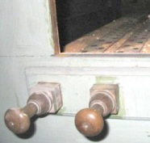
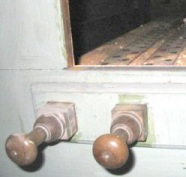
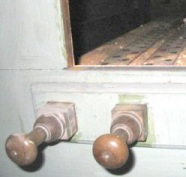
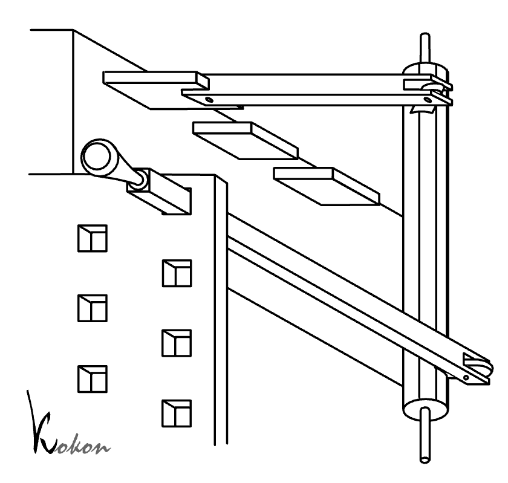
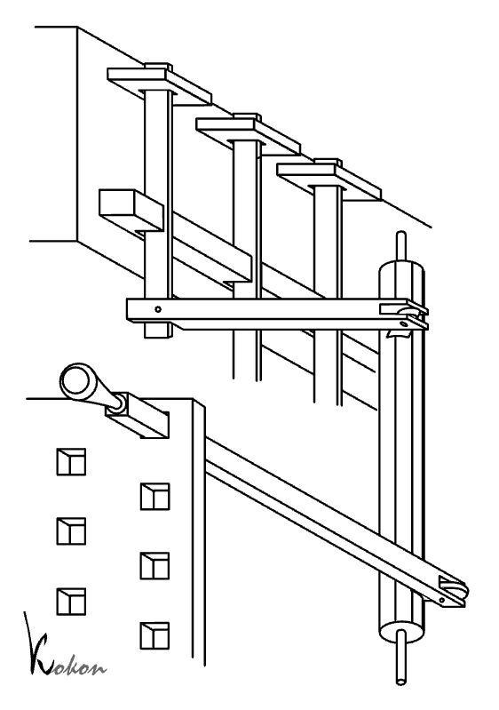
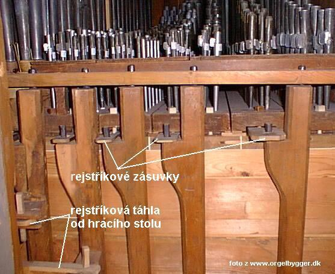
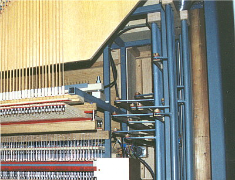
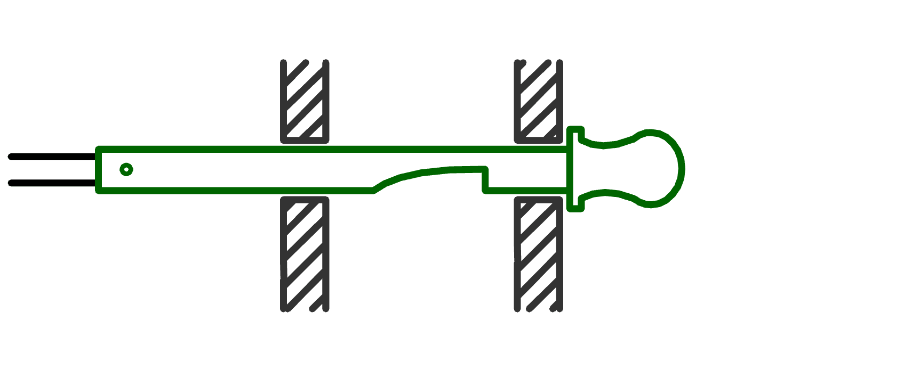
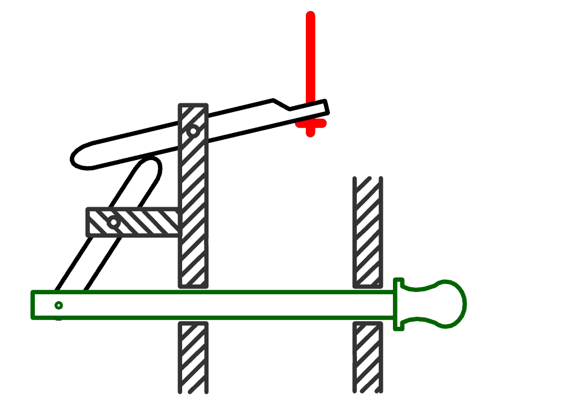

Rejstříková traktura je mechanismus, sloužící k otvírání
či zavírání (zapínání a vypínání) hlasů (rejstříků) ve varhanách. Tato
traktura stejně jako hrací traktura, může být sestrojena s použitím výlučně
mechanických komponentů. Popis by bylo vhodné začít od příkladu, který by zde vlastně ani neměl být zařazen, neboť v něm rejstříková traktura úplně chybí: |

Takové uspořádání nalezneme u malých varhan se zásuvkovou
(tónovou, příčnou) vzdušnicí, u kterých se rejstříková zásuvka ovládá
přímo pomocí rukojeti (manubria). Rukojeť je buď naklížena na zásuvce
nebo je přímo vyřezána se zásuvkou z jednoho kusu materiálu. Potáhne-li
v tomto případě varhaník za rukojeť, působí přímo na příslušnou zásuvku,
na dráze tohoto pohybu se již nenalézají žádné další součástky (táhla,
úhelníky, páky...), které by tvořily trakturu. |
 
U větších varhan je už běžnější využití mechanické
traktury, jejíž komponenty známe z tónové (hrací) traktury. Umožňuje rozumnější
rozložení ovládacích prvků na hracím stole a snadnější ovládání registrace
varhaníkem během hry (díky možnostem převodu pohybu pomocí úhelníků a
hřídelů umožňuje umístit ovládací rukojeť nezávisle na skutečné poloze
zásuvky příslušného hlasu ve vzdušnici). Výsledné konstrukce mohou být
různě složité. U dvou zde uvedených příkladů řešení je rozdílný způsob
ovládání zásuvky dán různou konstrukcí vzdušnic - rejstřík se zapíná vždy
vytažením rukojeti, v první případě je tedy zapnut při zásuvce zasunuté
do vzdušnice, ve druhém při vytažené (je to dáno vrtáním zásuvky). Proto
se obrázky navzájem liší o jednu páku, která převádí pohyb na opačný. |

Na této fotografii je uveden příklad provedení rejstříkové
traktury, ovládající zásuvky ve vzdušnici. Nejsou zde využity páky, ale
jen masivní hřídele, ke kterým jsou pohyblivě připevněny táhla od manubrií
v hracím stole. Stejným způsobem jsou ke hřídeli (která tak plní i funkci
úhelníku a převádí pohyb v pravoúhlém směru) upevněny v horní části zásuvky
(pomocí ok nasazených na kolíky na raménku hřídele). |

Obdobně je tomu i na této fotografii, hřídele (v pravé části obrázku) jsou ale kovové a podstatně delší (vzdušnice je vysoko nad hracím stolem). Na následující ilustraci, představující princip varhan s mechanickou trakturou je barevně zvýrazněna rejstříková traktura. V tomto případě spolupracuje se zásuvkovou vzdušnicí (nejrozšířenějším typem vzdušnice vůbec). |
V předchozích případech byly popsány mechanismy,
používané ve spojení se zásuvkovou vzdušnicí. Zásuvka, která je pohybem
odpovídajícího manubria na hracím stole vysunuta (či zasunuta) ze vdušnice
zůstává v příslušné poloze bez nutnosti jakýchkoli pomocných mechanismů
až do okamžiku další vynucené změny polohy. Zcela jinak vypadá mechanismus
traktury u jiných typů vzdušnic, ve kterých se zapínání rejstříků neděje
posunem zásuvky, ale otevřením ventilů různé konstrukce. Ve všech těchto
případech je zapnutí rejstříku spojeno s vpuštěním stlačeného vzduchu
do kanálu (komory, kancely), který jej přivede až k tónovým ventilům (akčním
členům). Zapnutí hlasu se tedy děje nadzdvižením či potáhnutím (v závislosti
na konstrukci) příslušného ventilu a jeho udržením v otevřené poloze do
doby vypnutí rejstříku. Ventil samotný se v otevřené poloze není schopen
udržet (působí na něj gravitace, tlak pružin i ovládaného vzduchu), o
aretaci polohy se tedy musí postarat speciální konstrukce rejstříkové
traktury. |
|  | Tato animace představuje jedno z nejjednodušších
řešení aretace. Vytažení manubria způsobí otevření ventilu ve vzdušnici,
přes který následně proudí vzduch do kancely příslušného rejstříku - rejstřík
je zapnutý. Rukojeť je tak vyvážena (nebo tlačena doplňkovou pružinou),
že po vytažení a překonání odporu ventilu se svým vybráním zahákne za
hranu otvoru ve varhanní skříni (v hracího stole). Díky tomu zůstane ventil
zaaretován v otevřené poloze. Rejstřík se vypne po nadzvednutí ovládací
rukojeti nahoru, díky tahu ventilu (či pomocné pružiny) se rukojeť samočinně
vrátí do výchozí polohy a ventil i rejstřík se uzavřou. |
Jiné řešení představuje tato animace.
Trn manubria je svázán s dvouramennou pákou, která podpírá další páku
stejného provedení. Druhá páka je spojena s abstraktem, který ovládá rejstříkový
ventil (ventil, vpouštějící vzduch do rejstříkové kancely). Vytažení manubria
způsobí postavení dvouramenné páky do svislého směru, nadzdvižení ramena
navazující páky a zatažení za abstrakt k ventilu. Páka ve svislé poloze
je současně vzpříčena ve stabilním stavu. Zatlačením na rukojeť se páka
dostane do labilní polohy a tah abstraktu, způsobený tlakem vzduchu na
ventil nebo pomocnou pružinou, přesune celý mechanismus do výchozí polohy. |
 |
V mechanické rejstříkové traktuře se nepoužívají
prakticky žádné pomocné zařízení, které by usnadnily rychlou změnu registrace
během hry (volné kombinace, kolektivy, crescendo). Kolektivy (P.F.Pl.T)
se používají spíše v novějších varhanách. V historických nástrojích kolektivy
chybí úplně nebo je jen jeden -tutti (platí pro varhany se zásuvkovou
vzdušnicí). U varhan s kuželkovou vzdušnicí se kolektivy používaly častěji
a jejich ovládání (vzhledem k nutné větší ovládací síle) se dělo zpravidla
pomocí pedálů. Mechanická rejstříková traktura je velmi spolehlivá (řídce se vyskytující závady jsou snadno odstranitelné). Traktura je charakteristická i svou bezhlučnou funkcí. Moderní varhanářství stále častěji používá elektronických prvků v součinnosti s mechanickou rejstříkovou trakturou. Elektronika umožňuje zapamatování a rychlé vyvolání (dříve několika, dnes několika desítek i stovek) kombinací rejstříků. Umožňují uložení a rychlé vyvolání kombinace během hry (koncertu) pouhým stiskem jediného tlačítka, což značně zvyšuje komfort hry a umožňuje hru i varhaníkovi bez registrátora. Akční členy elektronické registrace mohou působit přímo na vzdušnici nebo být připojeny k některé z částí rejstříkové traktury. Zůstane tak zachována i možnost ručního ovládání. K nevýhodám elektroniky patří vysoká pořizovací cena, nižší spolehlivost (vzhledem ke klimatickým vlastnostem prostředí, ve kterém pracuje), nemožnost opravy závad běžnými prostředky a také rychlé zastarávání (morální životnost elektroniky či použitého počítače je max. dvě desítky let, životnost varhan se dá počítat na staletí...). |
Na navazujících stránkách jsou popsány nejčastěji
používané komponenty mechanické
traktury, tónová
traktura a traktura spojek. |
Poznámka: Tato stránka je součástí Anatomie varhan ®, © Ing. Petr Bernat. Všechny animace © Konrad Zacharski